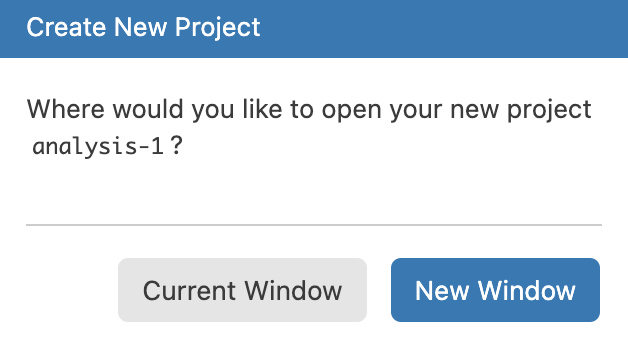

Information
Checking your setup
This tutorial assumes that you have read and completed all the steps in the “Tutorials in Positron” tutorial from the tutorial.helpers package, i.e., this package. We will ask you to copy/paste the command/response so often, we shorten this instruction to CP/CR.
Exercise 1
Load the tutorial.helpers package into your R
Console using the library() function.
Run search() in the Console to see the libraries that
you’ve currently loaded. CP/CR. That is, copy and paste that command and
the result into the space below.
Your answer should look something like this:
> library(tutorial.helpers)
> search()
[1] ".GlobalEnv" "package:tutorial.helpers" "tools:rstudio"
[4] "tools:positron" "package:stats" "package:graphics"
[7] "package:grDevices" "package:utils" "package:datasets"
[10] "package:methods" "Autoloads" "package:base"
>Don’t worry if your answer does not match our answer exactly, either in this question or in any other question.
The string “package:tutorial.helpers” should be in the output. If you
skip this step, commands like show_file() will not work
without a tutorial.helpers:: prefix.
Exercise 2
Load the tidyverse package into your R Console using
the library() function.
If this fails, the most likely cause is that you failed to installed
the tidyverse package, among others. Run
install.package('tidyverse') in the Console to fix this and
then try library(tidyverse) again.
Run search() in the Console to see the libraries that
you’ve currently loaded. CP/CR. That is, copy and paste that command and
the result into the space below.
There should be strings such as “package:tidyverse” in the output. These are the packages that are currently loaded in your workspace.
Exercise 3
Look at the top left of your Console. Here you should see the version of R you are running. It should look something like the image below.

Type R.version$version.string into the Console and hit
Enter. CP/CR.
This should be the same as the version you saw at the top left of the Console. Make sure it is the most recently released version of R.
Exercise 4
Shortly, we will create a new “project” for you to work in. Before we do this, it might be useful to understand where you are right now.
In the Console, run getwd(). CP/CR.
This function returns the “path” to your current working directory. A
path is simply the information which allows you to reach a location on
your computer. In this case, if you wanted to find the folder from which
R is running, you would follow the path returned by
getwd().
More info on paths can be found here.
Exercise 5
Whenever you start a new project, you will want to store it in a location which you can easily find. Right now, you are likely in an arbitrary location on your computer. It would be much more useful to have a location dedicated to your projects.
From the Console, run path.expand("~"). CP/CR.
My answer:
> path.expand("~")
[1] "/Users/dkane"The tilde symbol, ~, refers to a user’s home directory.
Your answer should look similar. If you are on Windows, the directory
separators will be backward slashes rather than forward slashes, as on
my Mac. And there will also be a disk, generally C:, on
which these directories are placed. So, on Windows, the answer might
be:
> path.expand("~")
[1] "C:/Users/dkane/"The important point is that, in almost all non-pathological set ups, you will have a home directory. It is important to know where that is.
Exercise 6
Let’s take a look at the directories in your home directory. From the
Console, run list.files(path.expand("~")). CP/CR.
My answer:
> list.files(path.expand("~"))
[1] "Applications" "counties.R" "Desktop" "Documents" "Downloads" "Library"
[7] "miniconda3" "Movies" "Music" "Pictures" "Public" "temp"
>If you are on a Mac, then the Desktop directory is a
handy location in which to store all your coding projects. On Windows,
however, the Desktop is less convenient because OneDrive
often backs it up automatically, which can cause all sorts of problems
later on.
Avoid doing data science in any directory which is backed up by OneDrive, or any other backup service.
Exercise 7
Let’s make a folder, and call it projects, and store it
someplace sensible. If you on a Mac, then, from the
Console, run:
dir.create(file.path(path.expand("~/Desktop"), "projects"))If you on Windows, then, from the Console, run:
dir.create(file.path(path.expand("~"), "projects"))CP/CR.
If that command works, you are all set. (If you get a message about
the directory already exists, then you are also all set.) If not, you
will need to create a projects directory by hand. Helpful
resources can be found here
for Windows, and here
for macOS.
The path to your data science projects should not include any folders with spaces (or other weird characters) in their names. For example, this is a reasonable location for R projects if you are using a Mac:
/Users/dkane/Desktop/projects/And if you are using Windows . . .
C:/Users/dkane/projects/Again, you can place your projects directory where you
want, as long as you keep track of where it is.
Projects
Good data scientists keep their work organized. You should place your
work in different projects, which are simply folders (that is,
directories) on your computer. Each separate project is a folder within
your main folder for your data science work, i.e.,
/Users/dkane/Desktop/projects/.
Exercise 1
Read all of the instructions before starting this exercise.
From the File menu, select New Project ....
(You can also click on the “New Project” icon on the Welcome
screen.)
From the “Project Type” screen, select “R Project.” Click “Next.” Doing so brings up the “Create New Project” screen:

Enter analysis-1 as your “Project Name.”” Set the
“Parent Directory” to your projects directory. (You may
have to “Browse” your computer to find it.) Do **not* initialize the
project as a Git repository.

Click “Next.”
The “Set up project configuration” screen should appear. Accept the default option, which should be the version of R which you installed. Click “Create.” Then:

You can have multiple “Windows” open when you use Positron. Getting used to moving between Windows is important; the short-cut-key `Command/Ctrl + `` may be useful.
Select “New Window.” You will need to move back-and-forth between the
two windows, one of which is this tutorial and the other of which is the
actual analysis-1 project in which we will be working.
Now that you have read all the directions, we can go through the steps.
In the new window, run getwd() in the Console. (In other
words, you are not doing this in the Console in the
window in which you are completely this tutorial, if only because the
Console in this window is busy running the tutorial
itself.)
CP/CR.
This path should now be different than our previous path, similar to the path below. Creating/opening a project moves the R session to that directory.
/Users/dkane/Desktop/projects/analysis-1/If your path does not include your projects folder, you
probably did not fill in the “Parent Directory” box correctly. It should
be the path to your projects folder, including
projects itself.
Exercise 2
The new window should look like this:

The Welcome screen has disappeared. There is a blank,
unsaved file named Untitled-1 in the Editor pane. You can
tell it is unsaved because its name is italicized. By deafult,
the Explorer button in the Activity Bar on the far left has been
activated, showing us that the analysis-1 directory has no
files in it yet.
Run list.files(). Again, we are issuing all these
commands in the other window, not the window in which this tutorial is
running.
CP/CR.
list.files() returns files contained in your current
project. There are none so far.
Keeping all the files associated with a given project — input data, R scripts, analytic results, and figures — together in one directory is very wise.
Everything you need is in one place and cleanly separated from all the other projects that you are working on.
Script 1
So far, we have only worked in the Console, but it’s quite difficult to type more than a few lines of code into the Console at once. One solution is to use R scripts, files which contain a permanent copy of our code.
Exercise 1
The file Untitled-1 should already be in your Editor
window. If it is not, you can create a new file by clicking the
File -> New File ... drop down menu, and then selecting
R File.
Type 5 * 5 into your R script file. Save the file. Name
it script-1.R. (Note that R will provide the
.R suffix, so you only need to type
script-1.)
In the Console, run:
tutorial.helpers::show_file("script-1.R")CP/CR.
You might have gotten this warning:
Warning message:
In readLines("script-1.R") : incomplete final line found on 'script-1.R'This means that your file needs a blank line at the end. As a rule of thumb, it is always a good idea to have the last line of any text file be blank.
R scripts are permanent copies of your code. You can save them and also work with them interactively.
Exercise 2
Note the “Source” button, which is in the top right corner of the Editor.

If you hover your cursor over it, you will see “Source R File.” Press the Source button. (We will sometimes shorten the instruction “press the source button” to just “source” the script.)
Note what happens in the Console. CP/CR.
You answer should look like this:
> source("/Users/dkane/Desktop/projects/analysis-1/script-1.R")Whenever you run an R script file by hitting the “Source” button, Positron will send all the code in the file to the Console.
Exercise 3
Right next to the Source button is a small downward pointing arrow. Clicking on it produces three options, the top (default) of which is the simple Source which you ran in the last question.

Select the second option: “Source R File with Echo.” CP/CR.
Your answer should look like this:
> source("/Users/dkane/Desktop/projects/analysis-1/script-1.R", echo = TRUE)
> 5 + 5
[1] 10
>The file is sourced, as before. But, this time, each line in the file
is “echoed,” meaning we see both the code, 5 + 5 in this
case, and the return value, if any, which is 10.
Exercise 4
There are often “shortcut key” combinations which perform the same
task as clicking a button. Placing your cursor inside the R script
window and using the keyboard shortcut
(Cmd/Ctrl) + Shift + (Return/Enter) is the same as hitting
the “Source R File with Echo” option.
Note that Return is the name of a Mac key and
Enter the name of the corresponding Windows key, just like
Cmd (“Command”) is a Mac key and Ctrl
(“Control”) is the equivalent Windows key. In other words, on the Mac,
we hit Cmd + Shift + Return while on Windows it is
Ctrl + Shift + Enter. However, typing
Return/Enter all the time is annoying, so, going forward,
we will just use Enter. Mac users are expected to remember
that this means the Return key.
Try it now. CP/CR.
Using shortcut keys is quicker and more professional than clicking buttons.
Exercise 5
In your R script, type 6 * 3 in the line after
5 + 5. Save the file with Cmd/Ctrl + S. (Note
that the S in that shortcut key just refers to the “S” key
on your keyboard. You don’t need to capitalize it.)
Source this file with echo. CP/CR.
The answer is what you might expect:
> source("/Users/dkane/Desktop/projects/analysis-1/script-1.R", echo = TRUE)
> 5 + 5
[1] 10
> 6 * 3
[1] 18
>Each line is echoed. Each line is executed. The results of each line, if there are any, are printed.
The output you see is the same as what would happen if you copied
each line to the Console and hit Enter after each one.
Exercise 6
Instead of sourcing the entire file, we can just execute (or “run”) a
single line. In script-1.R, place your cursor on the same
line as 6 * 3 and click the “Run Selection in Console”
option, the third choice in the Source button. CP/CR.
You should get:
> 6 * 3
[1] 18
>Instead of both lines in the script executing, only the second line does. And the process by which this happens has nothing to do with the entire script. Run is not the same thing as Source. With Run, you are just copy/pasting some of the lines from the script to the Console at a time. With Source, you’re copy/pasting all lines from the script.
Exercise 7
The shortcut key for running a single line of code is
Cmd/Ctrl + Enter. In your R script, place your cursor on
the same line as 5 + 5 and hit
Cmd/Ctrl + Enter. CP/CR.
Only the first line of the script is executed.
Cmd/Ctrl + Enter is probably the single most commonly used
shortcut key because it is very handy to execute your code
line-by-line.
Cmd/Ctrl + Enter is “smart” in two ways. First, if you
highlight more than one line of code, and then place your cursor within
the highlighted area, it will execute all the code in that area. Second,
even if nothing is highlighted, if the line with the cursor is part of a
block of code which extends over multiple lines — like creating a plot —
it will execute all the code in that block.
Exercise 8
Go back to the first line in your R script. Change 5 + 5
to x <- 5 + 5, thereby creating an object named
x with a value of 10. Save the file. Click the “Source R
File with Echo” option. CP/CR.
Your answer should look like:
> source("~/Desktop/projects/analysis-1/script-1.R", echo=TRUE)
> x <- 5 + 5
> 6 * 3
[1] 18
> Note how the x <- 5 + 5 is executed (and echoed) but
nothing is printed. The assignment operator (<-) does
not generate a printed result.
Exercise 9
In the Console tab, run ls(). CP/CR.
ls() returns a list of objects present in your
environment. These are the same objects displayed under Variables in
your Session tab in the Secondary Side Bar in Positron (on the right
side).

Script 2
Let’s create this plot:

Exercise 1
Click File -> New File ... -> R File. At the top
of the Editor, the file should be called Untitled-1 (or
something similar).
Click the “Save current document” icon – the disk image to the right
of the Open dropdown menu. Or use the shortcut Cmd/Ctrl + S
to save the script. Let’s call this file script-2. The
.R suffix is added automatically.
In the Console, run list.files(). CP/CR.
Save your scripts (with informative names) in the project, edit them, run them line-by-line or in their entirety. Restart R frequently to make sure you’ve captured everything in your scripts.
Scripts and projects give you a solid workflow that will serve you well in the future. Always remember to create one project for each data analysis project. That project may contain multiple scripts files, along with other material.
Exercise 2
Restart your R session with Cmd/Ctrl + Shift + 0.
(Again, we are assuming that you are doing this work in a different
Positron window, not the same one as you are using for this
tutorial.)
From the Console, run list.files(). CP/CR.
Your answer should look like:
R 4.4.2 exited (preparing for restart)
R 4.4.2 restarted.
> list.files()
[1] "script-1.R" "script-2.R"
>The two files we had from before — script-1.R, and
script-2.R — still exist. Our work, if we have saved it, is
preserved even when R (or Positron) restarts.
Exercise 3
From the Console, run ls(). CP/CR.
x is gone! The environment — the place in the computer
where R creates and uses objects — is cleaned, by default, each time R
restarts. This is a good thing! For our work to be “reproducible,” we
want to be able to start from nothing except our code and raw data.
Exercise 4
At the top of script-2.R, type
library(tidyverse)You will see, in the top bar of the Editor, that
script-2.R, the name of the file, has a black dot next to
it. This indicates that there are unsaved changes in the file.
Run the entire file with Ctrl + Shift + Enter. Note how
much material — the “Attaching core tidyverse packages” and so on — is
produced because we are sourcing the file with
echo=TRUE.
Run search() in the Console. CP/CR.
This function returns a list of loaded packages. This should include
the string package:tidyverse.
Exercise 5
Skip a line and add the following comment to the file:
# This is an example of a code comment within an R script.Save the file.
In the Console, run:
tutorial.helpers::show_file("script-2.R")CP/CR.
Did you remember to have a blank line at the end of the file? If not, you got a warning. Always have a blank line at the end of any text file.
Comments begin with a hash (also known as a “pound sign”):
#. R will ignore everything on the line to the right of the
hash when trying to run the code.
Comments are an extremely useful tool when writing code. If they’re placed well, it becomes much easier to debug (find and fix mistakes) if something goes wrong.
There are a few “guidelines” to writing comments, for example:
- Comments should be used sparingly.
- Comments are unnecessary and in fact distracting if they state the obvious.
- Comments that contradict the code are worse than no comments. Always make a priority of keeping the comments up-to-date when the code changes!
Typically, when reading code, you should be able to answer 3 questions fairly easily, for every line:
- What is this code doing,
- How is it doing it, and
- Why is it being done.
The what and how can be deduced from the code itself. The why, though, is a bit trickier, and it is highly recommended that you use comments to make it easier to tell why something is being done.
# This is an example of a poor comment:
...
x <- x + 1 # Increment x
...
# This is an example of a good comment:
...
x <- x + 1 # Account for borders
...Exercise 6
Change the code comment in script-2.R from “This is an
example of a code comment within an R script.” to a one sentence
description of one of your recent meals. Save the file.
In the Console, run:
tutorial.helpers::show_file("script-2.R")CP/CR.
Get in the habit of adding comments.
Figuring out why something was done is much more difficult
than understanding how it was done. For example,
geom_smooth() has an argument called span,
which controls the smoothness of the curve, with larger values yielding
a smoother curve. Suppose you decide to change the value of
span from its default of 0.75 to 0.9: it’s easy for a
future reader to understand what is happening, but unless you note your
thinking in a comment, no one will understand why you changed
the default.
Exercise 7
Skip a line after your comment. Call ggplot(), setting
data to diamonds and mapping x to
carat within aes().
Run the entire file again. Note the sloppiness of the word “run” in
this instruction. It is not always clear what “run” means. For example,
it does not mean to click the “Run” button! In general, “run”
means to “execute” all the code in the file, most commonly by either
using Ctrl + Shift + Enter or by pressing the “Source”
button.
This should generate a blank plot in the Plots tab in buttom of the Secondary Side Bar.
In the Console, run:
tutorial.helpers::show_file("script-2.R")CP/CR.
ggplot() will generate a blank plot, at least until a
geom layer is added.
Exercise 8
Add a layer with geom_histogram(). Change the border
color in our graph by setting color to "white"
within geom_histogram, and change the number of columns in
our plot by setting the bins argument to 100.
Remember that, to connect the ggplot() call to
geom_histogram(), we need a +.
Run the file. Again, to “run” a script generally means to “execute”
it, meaning sending it to the R process. We have learned two ways to
(easily) execute an entire file: pressing the “Source” button or hitting
the associated shortcut key: Ctrl + Shift + Enter.
This should generate bars on your plot. Did you remember to place a
+ after the ggplot() call and before the
geom_histogram() layer?
In the Console, run:
tutorial.helpers::show_file("script-2.R")CP/CR.
The color argument used here modifies the
border color of our columns. To change the fill color,
use the fill argument.
Exercise 9
It would be nice if the numbers on the Y-axis were formatted better, i.e., with commas. The easiest way to do that is to add this line to the script.
scale_y_continuous(labels = scales::comma_format())Do so. Run the file. Note that you don’t need to save the file first.
If you execute a file with either “Source” or
Ctrl + Shift + Enter, RStudio will save the file
automatically.
Don’t forget that you will need a + after the call to
geom_histogram().
In the Console, run:
tutorial.helpers::show_file("script-2.R")CP/CR.
We use scale_y_continuous() (and
scale_x_continuous()) to modify the labels and the breaks
in numeric axes. The scales package provides a variety
of useful formatting tools, including comma_format(),
dollar_format() and others.
Exercise 10
Now let’s make our graph look a little nicer by adding a
labs() layer with an appropriate title, subtitle, and axis
labels.
Reminder, this is what our graph should look like

Run your R script to see your completed plot. Again, note the wording here! In casual language, we use the word “run” to generically mean “Tell the computer to execute the commands in this file.” We don’t necessarily care how that is achieved.
In the Console, run:
tutorial.helpers::show_file("script-2.R")CP/CR.
Good coding style is like correct punctuation: you can manage without it, butitsuremakesthingseasiertoread. Even as a very new programmer, it’s a good idea to work on your code style. Using a consistent style makes it easier for others (including future-you!) to read your work and is particularly important if you need to get help from someone else.
Note the nice formatting. After the ggplot() call, the
next two commands — geom_histogram() and
labs() — are both indented the same amount. Similarly,
arguments to a given function — like bins and
color — are lined up with each other.
Exercise 11
Now we have the code which creates a plot in script-2.R.
How do we use this plot for other things? Right now we have to run
script-2.R every time we want to see the plot, which is a
little inconvenient.
We can use the ggsave() function. Type
?ggsave in the R Console. This will open the help page for
ggsave(). Copy and paste the Description from the help page
into the space below.
ggsave() is used to save plots as individual files,
separate from the code which created the plot. In this case we will be
using the “png” format.
Exercise 12
We want to save our entire graph to an object, which can be done by
setting our plot equal to a variable. Call this variable
hist_p.
Now using the ggsave() function we can create a png of
our plot from our code. In ggsave(), set plot
to hist_p, file to
"diamonds.png".
Your entire file should look like:
library(tidyverse)
# Had an OK filet mignon at Cheesecake Factory.
hist_p <- ggplot(data = diamonds,
mapping = aes(x = carat)) +
geom_histogram(bins = 100,
color = "white") +
scale_y_continuous(labels = scales::comma_format()) +
labs(title = "Histogram of Carat (Weight) among 50,000 Diamonds",
subtitle = "Carats just at or above meaningful numbers are very common",
x = "Carat",
y = "Count",
caption = "diamonds data set from ggplot2 package")
ggsave(plot = hist_p, file = "diamonds.png")Run your code. CP/CR.
Your answer should look something like:
> source("/Users/dkane/Desktop/projects/analysis-1/script-2.R", echo = TRUE)
> library(tidyverse)
> # Had an OK filet mignon at Cheesecake Factory.
>
> hist_p <- ggplot(data = diamonds,
+ mapping = aes(x = carat)) +
+ geom_histo .... [TRUNCATED]
> ggsave(plot = hist_p, file = "diamonds.png")
Saving 3.33 x 3.33 in image
>You are witnessing a conversation between your script and R. Your script tells R to do this, then do that, and then do this other thing. R does those things, occasionally providing a response or update.
Exercise 13
In the Console, run list.files(). CP/CR.
You should see the diamonds.png file which contains your
plot. Click on the Explorer button on the Activity Bar on the left in
order to see all the files in the analysis-1 directory.
Click on the diamonds.png file to open your plot in the
Editor.
If the title text flows out of the image, you might want to modify
the scale argument in ggsave() to find a
better image size. scale is set to 1 by default.
Script 3
Let’s make another plot, this time in a script inside of a different project. We’ll be making this plot:

Exercise 1
Type getwd() into the Console. CP/CR.
Your answer should look like this:
"/Users/dkane/Desktop/projects/analysis-1"Somewhere in the path should be analysis-1, the name of
the project you’re in right now.
Exercise 2
Type list.files() into the Console. CP/CR.
This command shows the files in the directory.
Note that “project” has multiple meanings. First, “project” is a
generic term for an a project which contains our code/data, generally
with a sensible name. Second, analysis-1, note the use of
typewriter font, is the name of a specific project. Third,
analysis-1 — the same string in the same font — can refer
to the directory in which the project is located.
For the most part, the names of projects and the directories in which they reside are used interchangeably.
Exercise 3
From the Positron menu, select
File -> New Project .... (Again, all of this occurs in
the Positron window in which you are not running this
tutorial.) Select “R Project” and click “Next.”
Use analysis-2 for the “Project Name.” Ensure that
“Parent Directory” is set to the location of your projects
directory. Click “Next” and then “Create.”
Choose “Current Window,” rather than “New Window” as we did before,
since we no longer need to see the analysis-1 project.
Type getwd() into the Console. CP/CR.
Your answer should look like this:
"/Users/dkane/Desktop/projects/analysis-2"Somewhere in the path should be analysis-2, the name of
the project you just made and are now in.
Exercise 4
Now, we have to create the script where we’ll be creating our plot.
In the menu bar on the top of the window, press
File -> New File -> R Script. Type 5 * 5
and a newline into the file and hit Ctrl/Cmd + S to save
it. Save it as script-3.R (the .R is
automatically supplied by the dialog box when you save, so you only need
to type script-3).
In the console, run list.files(). CP/CR.
You should see script-3.R somewhere in the output.
Exercise 5
Go back to editing script-3.R. Get rid of everything
that’s already there. Copy-paste the below code into the script, and
save with Ctrl/Cmd + S.
library(tidyverse)
car_plot <- ggplot(mpg, aes(displ, hwy, colour = class)) +
geom_point()
car_plotDon’t forget to have an empty line at the end of the file!
Once you’re done, source the script with the “Source” button in the top right.
Back in the Console, run
tutorial.helpers::show_file('script-3.r'). CP/CR.
The output should have the same chunk of code as the one you were given to copy-paste above.
Summary
This tutorial covered Chapter 2 Workflow: basics, Chapter 4 Workflow: code style, Chapter 6 Workflow: scripts and projects, and some material in Chapter 28 Quarto from R for Data Science (2e) by Hadley Wickham, Mine Çetinkaya-Rundel, and Garrett Grolemund. You learned how to use R scripts and how to create projects.
Download answers
- Click the button to download a file containing your answers.
- Save the file onto your computer in a convenient location.
(If no file seems to download, try clicking with the alternative button on the download button and choose "Save link as...")